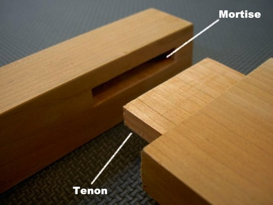

How to cut a Mortise and Tenon
Tools required:
- Chisel
- Workbench with vise and dog holes
- Joiner's Mallet or hammer
- Tenon saw
- Pencil or marking knife
- Try square
- Marking gauge
What is a mortise and tenon?

- Chisel
- Workbench with vise and dog holes
- Joiner's Mallet or hammer
- Tenon saw
- Pencil or marking knife
- Try square
- Marking gauge
What is a mortise and tenon?
A mortise and tenon is one of the must-know joints in any woodworkers skill set. It's most commonly made these days with a router and tablesaw, but it is traditionally made with a few common handtools. It consists of two parts: the mortise and the tenon (it's a creative name isn't it?). The mortise is the hole in the wood, and the tenon is cut to fit it. Fit properly, it is one of the strongest joints in woodworking, significantly stronger than screws or glue.
Mark out your mortise and tenon
When your joint is done, and you need to adjust it to fit, the tenon is significantly easier to trim down. Widening the mortise is a pain, and inexact. So always cut your mortise first, then cut your tenon slightly proud, and trim it down till it's tight. There's no need to overthink the size of your mortise. For width, use a chisel around 1/3 the width of your board. The length should be around 2/3 the length of the board with the tenon. Depth depends on the size of your piece. If you're cutting a mortise into a 4x4 for a massive frame, you should be cutting it around half the depth of your board. If it's a small stretcher, you can get away with something as shallow as 1/4 inch.
Cut your mortise
I'll never be able to explain this better than the great Paul Sellers. This particular video compares a regular chisel vs. a specialized mortise chisel, but it's a great visualization for how cutting a mortise with chisel works as well.
Cut your tenon
To cut your tenon, use your tenon saw (sometimes called a back saw) to cut all the way around your faces first. Then cut your short shoulders out. Then cut your long shoulders out. You'll want to make these cuts on the outside of your lines, so you have room to trim down to fit your mortise. Once you've got these cuts made, use a sharp chisel to trim your shoulders down to your lines. Try to keep your chisel straight, so you don't cut a tapered tenon.
Trim to fit
Now the fun part! Test your tenon's fit into your mortise. It should be tight or not even fit. That's a good place to start. Check where you're tight, and start paring a little bit a time until your cheeks are fitting in the mortise. Then work pare down your shoulder until the whole thing starts to fit. Start pushing the tenon in until it sticks. Pull it out and pare down a little more. You want your joint to be tight, but you don't want to have to hammer it down. It should push in by hand and take a little working back and forth to pull it back out. Once you're there you can be done, or add a touch of glue to the faces for a more permanent hold.